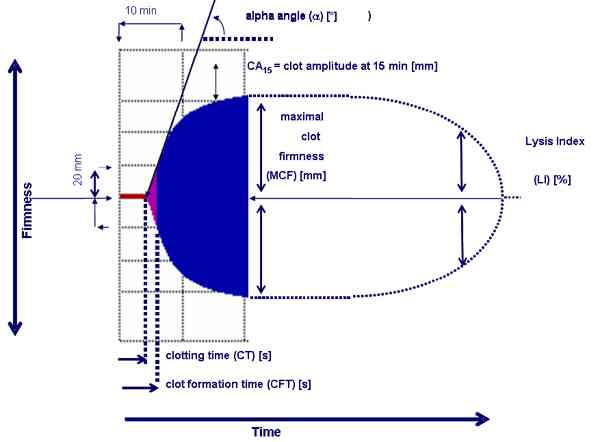

Bienvenue Sur Medical Education
Coagulopathie post-traumatique
Spécialité : hematologie / traumatologie /
Points importants
-
Les hémorragies incontrôlées sont responsables de près de 40% des décès dans les suites d'un traumatisme
-
Un traumatisme sévère s'accompagne d'une coagulopathie dans environ 30% des cas
-
Cette coagulopathie dépend de la sévérité du traumatisme et du volume de remplissage vasculaire
-
La coagulopathie est aggravée par l'hypothermie et l'acidose métabolique, formant ainsi une triade létale mais également par l‘hypocalcémie
-
Il existe une corrélation étroite entre la survenue d'une coagulopathie et le pronostic du patient (coagulopathie = + mauvais pronostic)
-
Le traitement de la coagulopathie passe par l'hémostase des lésions hémorragiques, le traitement de l'hypothermie et de l'acidose métabolique, le traitement d'une hypocalcémie, la supplémentation en produits sanguins
-
La transfusion comprend obligatoirement, en plus des CGR, des PFC, du fibrinogène et des plaquettes
-
Le ratio PFC/CGR doit être proche de 1 : 1 à 1 : 2
Présentation clinique / CIMU
-
La coagulopathie rencontrée dans le cadre du traumatisme sévère n'est pas une CIVD car il n’y a pas de phénomène de thrombose diffuse
-
La définition de la coagulopathie dans ce contexte bien particulier n'est pas univoque mais pourrait correspondre à un INR > 1,5 et/ou des plaquettes < 100 G.L-1 et/ou un fibrinogène < 1,0 gr.L-1
-
On considère qu'environ 30% des traumatisés sévères présentent une coagulopathie. Ce chiffre peut même atteindre 98% si s'associent une HoTA, un Injury Severity Score (ISS) > 25, une acidose métabolique et une hypothermie
SIGNES FONCTIONNELS
-
La présentation clinique est très variable en fonction de la nature et de la gravité du traumatisme associé. Ainsi, elle peut accompagner un tableau clinique faussement rassurant et se déclarer secondairement (diagnostic biologique) ou alors, accompagner un tableau clinique d'emblé suraigu et se traduire par des hémorragies incoercibles ou spontanées (points de ponction ou zones lésées)
CONTEXTE
Présentation clinique / CIMU
- La coagulopathie rencontrée dans le cadre du traumatisme sévère n'est pas une CIVD car il n’y a pas de phénomène de thrombose diffuse
- La définition de la coagulopathie dans ce contexte bien particulier n'est pas univoque mais pourrait correspondre à un INR > 1,5 et/ou des plaquettes < 100 G.L-1 et/ou un fibrinogène < 1,0 gr.L-1
- On considère qu'environ 30% des traumatisés sévères présentent une coagulopathie. Ce chiffre peut même atteindre 98% si s'associent une HoTA, un Injury Severity Score (ISS) > 25, une acidose métabolique et une hypothermie
SIGNES FONCTIONNELS
- La présentation clinique est très variable en fonction de la nature et de la gravité du traumatisme associé. Ainsi, elle peut accompagner un tableau clinique faussement rassurant et se déclarer secondairement (diagnostic biologique) ou alors, accompagner un tableau clinique d'emblé suraigu et se traduire par des hémorragies incoercibles ou spontanées (points de ponction ou zones lésées)
CONTEXTE
Traitement usuel
- Favorisée par la prise d'antiagrégant ou d'anticoagulant
Antécédents
- Favorisée par l'atteinte préexistante de la crase sanguine (hémophilie, Willebrand...)
Facteurs de risque
- Prise en charge thérapeutique inadaptée ou tardive
- Remplissage vasculaire massif, hypothermie, acidose métabolique, hypocalcémie
Circonstances de survenue
- Traumatisme sévère
EXAMEN CLINIQUE
- Recherche de zone hémorragique dont il serait possible de faire rapidement l'hémostase (cuir chevelu, épistaxis, plaie cutanée...)
-
En dehors des signes cliniques accompagnant le choc hémorragique, recherche de stigmate de spoliation sanguine :
- pâleur conjonctivale
- tachycardie (ou bradycardie paradoxale)
- soif
- polypnée...
EXAMENS PARACLINIQUES SIMPLES
- SpO2 parfois difficile à mesurer du fait de la vasoconstriction sévère accompagnant le choc hémorragique
- Mesure de la température : systématique à la recherche d'une hypothermie
- Hémoglobine capillaire : systématique à la recherche d'une baisse de l'hémoglobine
- Dispositif de mesure rapide de l'INR type INRatio® ou CoaguChek® ; des travaux préliminaires semblent montrer que l'INR mesuré par méthode rapide semble bien corrélé à celui mesuré par méthode standard, chez le patient traumatisé
CIMU
- Tri 1 à 3
Signes paracliniques
BIOLOGIE
-
Perturbation généralisée des tests de coagulation classique avec en particulier :
-
augmentation de l'INR (ou la baisse du TP)
-
allongement du TQ et du TCA
-
diminution des plaquettes
-
diminution du fibrinogène
-
Diminution globale de tous les facteurs de coagulation
-
Marqueur de dilution : hypoprotéinémie
-
Marqueur de fibrinolyse :
-
augmentation des D-dimères et PDF
-
augmentation du temps de lyse des euglobulines
-
Stigmates de l'hémorragie :
-
anémie aigue
-
acidose métabolique lactique
-
Hypocalcémie liée à la fois à la déperdition, à la dilution et à l'apport de citrate par les PF
- augmentation de l'INR (ou la baisse du TP)
- allongement du TQ et du TCA
- diminution des plaquettes
- diminution du fibrinogène
- augmentation des D-dimères et PDF
- augmentation du temps de lyse des euglobulines
- anémie aigue
- acidose métabolique lactique
Remarques
- Cette coagulopathie ne peut se traduire dans un 1er temps que par la diminution isolée du fibrinogène, 1er marqueur à diminuer
- Le bilan comporte systématiquement en plus de l'INR et du TQ, la mesure du taux de fibrinogène ; le TCA n'apportant pas d'élément décisif
THROMBOELASTOGRAPHIE/METRIE
- ROTEM® ou TEG®
- Permet de mesurer en continu les propriétés viscoélastiques du caillot
- Approche de la fonction hémostatique du sang total en fonction du temps
- Praticable au lit du patient avec résultats en moins de 15 min
- Après mise en contact d'activateurs, apparition d’une courbe sur laquelle sont mesurables des temps de formation du caillot, un angle d’ouverture de la courbe, des amplitudes de caillots
 _271 Photo Principaux paramètres obtenus avec le ROTEM
- Ces différents temps ou amplitude étant corrélés à certains paramètres de la coagulation, vont ainsi pouvoir guider la prescription de produits sanguins sans avoir à attendre les résultats de la biologie standard
- Elles vont également permettre de mettre en évidence, de manière très fiable, une hyperfibrinolyse
Diagnostic différentiel
-
Troubles préexistants de la crase sanguine
-
Prise d'anticoagulant, en particulier AVK mais qui vont affecter spécifiquement les facteurs vitamine K dépendant
Traitement
TRAITEMENT PREHOSPITALIER
Traitement
TRAITEMENT PREHOSPITALIER
Le 1er des traitements de la coagulopathie est de tout faire pour prévenir l'apparition de celle-ci et des 2 autres paramètres de la triade létale que sont l'acidose métabolique et l'hypothermie
Course contre la montre
- Le temps est un facteur pronostic très fort lors de la prise en charge d'un patient traumatisé
- La probabilité d'apparition d'une coagulopathie sera d'autant plus forte que le temps écoulé depuis la survenue d'un traumatisme est important
- Faire sur le terrain ce qu'il est nécessaire de faire pour le patient mais en gardant comme règle que pour un patient non incarcéré, le temps de médicalisation doit être impérativement < 30 min. Principes du « scoop and play »
Limiter le saignement
- Hémostase de toutes les lésions dont il est possible de faire l'hémostase de manière rudimentaire en réalisant des points (cuir chevelu), en utilisant des sondes de tamponnement (épistaxis), des ceintures de contention (bassin) ou des garrots (membres)
Traitement de l'état de choc
- Restaurer une volémie efficace afin de limiter l'apparition d'une acidose métabolique résultant d'une mise en oeuvre du métabolisme anaérobie par bas débit sanguin
- Objectifs de PA recommandés en cas de choc hémorragique (PAS 90 mmHg en l'absence de traumatisme crânien grave et 120 mmHg en présence d'un TC grave) afin de limiter les quantités de liquide transfusé pour éviter d'aggraver les phénomènes de dilution, responsables (entre autre) de la coagulopathie
Prévention de l'hypothermie
- Enlever les vêtements mouillés
- Soustraire du froid le plus rapidement possible
- Couvrir
- Réchauffer l'atmosphère du véhicule de transport
Transfusion préhospitalière
- Nécessite la mise en place de protocole avec le CTS ainsi que de dispositif de conservation et de traçage des CGR
- CGR sont à prendre au départ si notion de lésion hémorragique et/ou que le site d'intervention pour un traumatisé est très distant
- Transfusion à entreprendre sur les lieux de l'intervention lorsque l'hémoglobine est < 8 gr/L
- En aucun cas, la transfusion préhospitalière ne doit faire retarder l'évacuation du patient vers un centre adapté
- Les mêmes règles de transfusion qu'à l'hôpital doivent être respectées (vérification de l'identité, carte pré-transfusionnelle...)
TRAITEMENT INTRAHOSPITALIER
Traitement spécifique du ou des traumatisme(s)
Traitement chirurgical ou radiologique d'une lésion hémorragique
Traitement des facteurs favorisants de la coagulopathie
- Hypothermie (réchauffement agressif)
- Acidose métabolique (restauration de la volémie et des capacités de transport de l'oxygène : transfusion)
- Correction systématique des hypocalcémies toujours rencontrées dans les états de choc hémorragiques
Traitement médical de la coagulopathie
-
Objectif : maintenir un INR < 1,6 avec un fibrinogène > 1 gr/L
-
En cas de choc hémorragique avéré ou suspecté : transfusion avec un ratio PFC/CGR compris entre 1:2 et 1:1
-
En dehors de situation clinique évidente, certains scores peuvent aider au déclenchement d'un protocole de transfusion massive (scores ABC ou TASH)
-
Supplémentation en fibrinogène dès que celui-ci est < 1,5 gr/L
-
Supplémentation en plaquette si < 50 G/L ou < 100 si hémorragie non contrôlée (ou traumatisme crânien)
-
D'une manière générale, dès que la transfusion dépasse une masse sanguine, ajout systématique de fibrinogène, plaquette et calcium
-
En cas de transfusion massive, ratio CGR/PFC/plaquette/fibrinogène : 6/4/1/1 - plaquette et fibrinogène tous les 6 CGR
Le « Damage Control Resuscitation » associe :
-
HoTA permissive
-
Ratio CGR/PFC voisin de 1-2
-
Traitement agressif de l'hypothermie
-
Traitement de l'acidose métabolique (utilisation de tampon)
-
Utilisation précoce de concentrés de plaquettes (voire de fibrinogène)
-
Considérer l’utilisation de rFVIIa (200 mg IVD) après hémostase chirurgicale et/ou radiologique, après correction de l’acidose, de l’hypothermie, de la thrombopénie et de l’hypofibrinogénémie, si persistance du saignement chez un patient < 65 ans sans ATCD important
MEDICAMENTS
Fibrinogène (Clottagen®, Haemocompletant®)
- Selon les recommandations de l'AFSSAPS, ne doit être prescrit que lorsque le fibrinogène est < 1 gr/L
-
Néanmoins, certaines équipes proposent de l'utiliser très précocement (par bolus de 3 gr IV) lors de la prise en charge du choc hémorragique post traumatique ou dans les hémorragies du post-partum, sur des critères de gravité clinique ou des éléments paracliniques :
- hémoglobine < 8 + INRa > 2
- thrombelastogramme : FIBTEM < 5 mm
Acide tranexamique (Exacyl®)
- Anti-fibrinolytique proposé comme adjuvant lors des chirurgies orthopédiques et cardiaque afin de limiter les pertes sanguines peropératoires
- Il est également proposé dans le traitement des fibrinolyses aigues rencontrées en traumatologie (1 gr dans 100 mL en 10 min, suivi d'une perfusion continue de 120 mg/h pendant 8 h
Surveillance
CLINIQUE
-
Vérifier l'arrêt des saignements macroscopiques (hémostase chirurgicale ou radiologique) ainsi qu'aux divers points de ponction
-
Vérifier régulièrement la température du patient
-
Vérifier qu'avec les manoeuvres thérapeutiques entreprises, les signes de choc disparaissent progressivement (marbrure...)
-
FC, PA, SpO2, conscience, diurèse/h
PARACLINIQUE
-
Répétition des bilans de biologie standard tant que dure le phénomène hémorragique, en pratique toutes les 2 h à la phase aiguë
-
Détermination systématique de l'INR (ou TP), du fibrinogène et des plaquettes mais également des gaz du sang et de l'acide lactique
Devenir / orientation
-
Transport ou transfert dans une salle d'accueil des urgences vitales (déchocage) d'un centre capable de proposer tous types de solution d'hémostase (chirurgie et radiologie interventionnelle) mais également le traitement de cette coagulopathie (centre disposant de capacité de transfusion massive)
Mécanisme / description
-
Le processus de l'hémostase est complexe et nécessite l'interaction de différents acteurs parmi lesquels l'endothélium, les plaquettes et facteurs de coagulation, les facteurs anticoagulants ainsi que les éléments de la fibrinolyse
-
Une coagulopathie est fréquemment observée chez le traumatisé sévère (en moyenne 30%) et s'intègre dans le cadre de la triade létale qui comprend en outre l'hypothermie et l'acidose métabolique
-
Chacun de ces 3 paramètres va potentialiser les 2 autres : ainsi la coagulopathie conduit à une plus grande perte sanguine et à des altérations physiopathologiques (bas débit - acidose métabolique) qui conduisent à une augmentation du remplissage vasculaire aggravant l'hypothermie, induisant une dilution et augmentant de facto la coagulopathie - on parle ainsi de cercle vicieux
PRINCIPAUX MECANISMES IMPLIQUES DANS LA COAGULOPATHIE
Devenir / orientation
- Transport ou transfert dans une salle d'accueil des urgences vitales (déchocage) d'un centre capable de proposer tous types de solution d'hémostase (chirurgie et radiologie interventionnelle) mais également le traitement de cette coagulopathie (centre disposant de capacité de transfusion massive)
Mécanisme / description
-
Le processus de l'hémostase est complexe et nécessite l'interaction de différents acteurs parmi lesquels l'endothélium, les plaquettes et facteurs de coagulation, les facteurs anticoagulants ainsi que les éléments de la fibrinolyse
-
Une coagulopathie est fréquemment observée chez le traumatisé sévère (en moyenne 30%) et s'intègre dans le cadre de la triade létale qui comprend en outre l'hypothermie et l'acidose métabolique
-
Chacun de ces 3 paramètres va potentialiser les 2 autres : ainsi la coagulopathie conduit à une plus grande perte sanguine et à des altérations physiopathologiques (bas débit - acidose métabolique) qui conduisent à une augmentation du remplissage vasculaire aggravant l'hypothermie, induisant une dilution et augmentant de facto la coagulopathie - on parle ainsi de cercle vicieux
PRINCIPAUX MECANISMES IMPLIQUES DANS LA COAGULOPATHIE
Acidose
- Résultat d'une hyperproduction de lactate par bas débit sanguin tissulaire induisant une activation du métabolisme anaérobie
- Exacerbé par la transfusion massive (CGR sont acides) et le remplissage par cristalloïdes (surcharge en chlore)
- En dehors des effets cardiovasculaires bien connus de l'acidose, celle-ci est responsable d'une inhibition des enzymes impliquées dans les phénomènes de la coagulation (une baisse du pH de 7,4 à 7,0 réduit l'activité du facteur VIIa de plus de 90%)
- L'acidose en elle-même est responsable d'un allongement du TCA et du TQ, d'une activation des anticoagulants naturels (protéine C et S), d'une diminution de l'agrégation plaquettaire et d'une activation de la fibrinolyse
Hypothermie
- Fréquemment observée en traumatologie (facteur pronostic)
- Favorisée par l'altération de la thermorégulation due au choc et à l'anesthésie
- Favorisée par l'absence de réchauffement des concentrés sanguins (4°C) au préalable
- Induit une dysfonction plaquettaire sévère (adhésion/agrégation)
- Diminue l'activité des facteurs de coagulation (-10% par degré) et augmente la fibrinolyse
- Résultats des tests standards de coagulation sont souvent surestimés car réalisés au laboratoire à 37°C
Dilution/déperdition
- Le choc hémorragique s'accompagne d'une perte inévitable de sang donc de facteur de coagulation, de plaquettes et de calcium
- En raison de la substitution initialement par des cristalloïdes et des colloïdes, il s'ensuit une dilution parfois très sévère
- Une dilution significative est décrite à partir de 20 mL/kg de cristalloïdes ou colloïdes
- Les colloïdes tels que les hydroxyéthylamidons (HEA) altèrent l'activité du facteur Von Willebrand
- L'utilisation initialement de CGR participe au développement d'une dilution en facteur de coagulation, plaquette et fibrinogène. Les PFC étant peu dosés en fibrinogène, une déplétion en fibrinogène est susceptible d'apparaitre tôt (après le remplacement de plus de 1,4 masse sanguine)
- L'utilisation de CGR et de PFC dans un ratio de 1/1 donne une solution avec un hématocrite de 30% et une concentration en facteur proche de 60%
- L'importance de ces phénomènes de dilution plaide pour une limitation du volume de remplissage en produit non sanguin, voire en l'utilisation plus précoce de catécholamines
Consommation intravasculaire des facteurs de coagulation
- Des phénomènes de consommation de facteurs peuvent être observés et sont en relation avec l'apparition d'une CIVD, en particulier lors de lésions endothéliales extensives, de lésions importantes des tissus mous, d'embolie graisseuse, de traumatisme crânio-cérébral, de contusion pulmonaire étendue
- Dans sa forme la plus sévère, cette CIVD peut prendre le masque d'une hyperfibrinolyse presque toujours fatale. Elle est alors toujours associée à des dommages tissulaires majeurs
Bibliographie
-
Beekley AC. Damage control resuscitation: A sensible approach to the exsanguinating surgical patient. Crit Care Med 2008 ; 36 [Suppl.]: S267-S274
-
Brohi K, Cohen MJ, Davenport RA. Acute coagulopathy of trauma: mechanism, identification and effect. Curr Opin Crit Care 2007 ; 13 : 680-5
-
David JS, Levrat A, Macabeo C, Clevenot D, Gueugniaud PY. Stratégie transfusionnelle. In Choc hémorragique, Journée des Urgences Vitales, Congrès National d'Anesthésie-Réanimation, Paris 2008 ; 665-674
-
Mittermayr M, Streif W, Haas T, et al. Hemostatic changes after crystalloid or colloid fluid administration during major orthopedic surgery: the role of fibrinogen administration. Anesth Analg 2007 ; 105 : 902-3
-
Rugeri L, Levrat A, David JS, et al. Diagnosis of early coagulation abnormalities in trauma patients by rotation thrombelastography. J Thromb Haemost 2007 ; 5 : 289-95
-
Savry C, Quinio P, Lefèvre F, Schmitt F. Maniabilité et intérêts potentiels du thromboélastomètre modifié. Ann Fr Anesth Réanim (Rotem™) dans le monitorage extemporané de l'hémostase en réanimation 2005 ; 24 : 607-616
-
Schreiber MA. Coagulopathy in the trauma patient. Curr Opin Crit Care 2005 ; 11 : 590-7
-
Spahn DR, Rossaint R. Coagulopathy and blood component transfusion in trauma. Br J Anaesth 2005 ; 95 : 130-9
-
Spahn DR, Cerny V, Coats TJ et al. Management of bleeding following major trauma: a European Guideline. Critical Care 2007 ; 11 : R17
-
Perkins JG, Cap AP, Weiss BM et al. Massive transfusion and nonsurgical hemostatic agents. Crit Care Med 2008 ; 36 [Suppl.] : S325-S339
Auteur(s) : Jean-Stéphane DAVID, Albrice LEVRAT